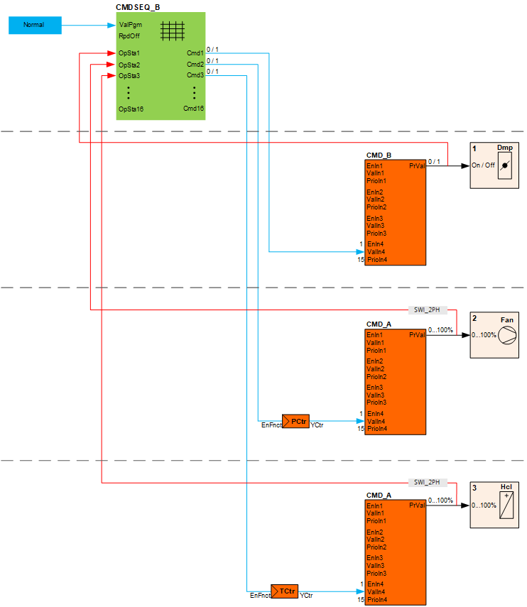
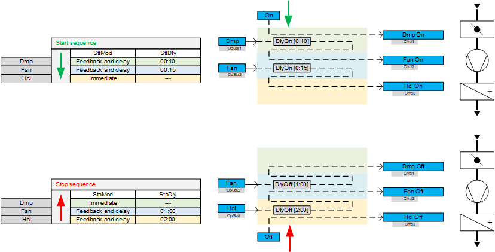
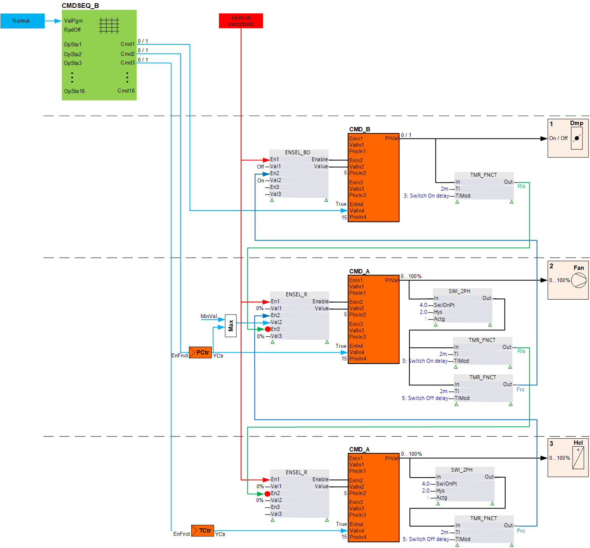

扁平植物的锁定
工厂组件必须包括特定的开启和关闭顺序，以便工厂以最佳方式运行并防止故障或损坏。设备组件可以相互锁定，以维持所需的开启和关闭顺序。在启用通过锁定机制链接的下一个工厂组件之前，必须在工厂组件上满足定义的条件。 A signal from output blockCMD_A, CMD_BorCMD_M设备组件的返回释放信号。
锁可以具有用于延迟启用或延迟关闭设备组件的延迟。
诸如 AND 或 OR 之类的逻辑函数可以集成在锁中，以根据附加信号来启用启用。
有两种类型的锁（请参见下面的示例）：
- Type 1
Returning an output signal from output block CMD_A, CMD_B or CMD_M to an input of function block CMDSEQ_B. - Type 2
Returning an output signal from output block CMD_A, CMD_B or CMD_M to an input on another output block CMD_A, CMD_B or CMD_M.
差异概述：
| 类型 1：通过 CMDSEQ_B | 类型 2：通过输出块 |
|---|---|---|
|
优先事项 | 通常优先级 15（自动模式） | 可以在输出块的输入上选择优先级 |
审议时限 | 在工厂打开和关闭 | 总是 |
异常模式下的响应 | 不活跃 | 活动或非活动（基于功能块 ENSEL 上的引脚序列） |
两种类型的锁的区别如下：
- Priority
Type 1:Locking via CMDSEQ_B is typically determined on the applicable input of the output block at priority 15 (Automatic mode).
Typ 2: For locking between output blocks CMD_A, CMD_B or CMD_M, the priority on the applicable input for the output block is set (typically at priority 5). - Timeframe for consideration
Type 1: Locking via CMDSEQ_B is only considered when switching on and off the corresponding plant component. Once the locking signal is no longer available during operation, it has no influence on the operation of plant components.
Type 2: Locking between output blocks CMD_A, CMD_B or CMD_M is always active. They act at plant switch-on and switch-off as well as during operation. - Behavior in exception mode
Type 1: Locking via CMDSEQ_B has no effect. CMDSEQ_B and, with it, all connected plant components are switched off in exception mode. The output blocks are controlled directly by the exception mode.
Type 2: Locking between the output blocks CMD_A, CMD_B or CMD_M can be active or inactive in exception mode. This is determined by the pin sequence on function block ENSEL.
如果要控制开启和关闭顺序，但在运行期间不需要连续监控设备组件，例如在带有热水加热盘管的通风设备上，则可以选择这种类型的锁定。
设备组件的活动模式信号从输出块 CMD_A 或 CMD_B 的输出 [PrVal] 返回到相应的输入 [OpSta1]...[OpSta3]：

从 CMDSEQ_B 返回到输入 [OpSta1]...[OpSta16] 需要二进制信号：
- CMD_B supplies the binary signal on output [PrVal].
- CMD_A requires a binary signal in addition to function block SWI_2PH to convert [PrVal]. The output provides value 1, if [PrVal] is greater than 4 [%].
- CMD_M requires a binary signal in addition to function block CMP_I to convert [PrVal]. Output [GT] provides value 1, if [PrVal] > 1 (0 is provided to [GT], where [PrVal] = 1).
如果可用的话，可以使用来自设备组件的实际反馈信号，而不是从输出块返回输出信号。
仅当收到前一个工厂组件的反馈后，CMDSEQ_B 才会打开或关闭下一个工厂组件：

启动和停止延迟类型（SttMod 和 StpDly）以及启动和停止延迟时间（SttMod 和 StpDly）在CMDSEQ_B.
 WARNING
WARNING

通过功能块 CMDSEQ_B 的锁定仅控制打开和关闭工作流程。
运行期间不再监控反馈。
- Select the lock via the output blocks, if components are controlled that could be destroyed by overheating (e.g. electric heating coil).
如果要控制开启和关闭顺序并且需要在运行期间连续监控设备组件（例如，在带有电加热线圈的通风设备上），则可以选择这种类型的锁定。
在这种情况下，如果风扇不再打开或风门不再打开，则必须立即关闭加热盘管。
WARNING
体积流量不足时电加热线圈过热。
在没有足够气流的情况下操作电加热线圈可能会导致过热并损坏设备。
- Ensure that there is sufficient air flow to operate the electric heating coil.
- A flow detector must be installed in the air duct to monitor air flow.
- The flow detector must be locked with the electric heating coil so that the electric heating coil only operates when there is sufficient air flow.
- Moreover, the heating coil should be locked on the software side with the fan. The heating coil can only operate after an operating message for the fan output is available.
输出块 CMD_A 和 CMD_B 或其上游控制器 PCtr 和 TCtr 从 CMDSEQ_B 接收打开和关闭命令。
在输出块上，定义了处理信号的优先级，通常为优先级 15（自动模式）。
输出块通过信号释放 [Rls] 和强制 [Frc] 相互锁定。
开关延迟均在功能块 TMR_FNCT 上设置。
功能块SWI_2PH也用在CMD_A上，提前转换成二进制信号。
输入 [En] 上的红点表示信号已反转。
通过输出块锁定控制开关工作流程并监控操作。如果在运行期间释放信号不再可用，则通过该输出块锁定的输出块将关闭。
同一优先级只能在输出块的输入组 1…4（输入 [EnIn1]、[ValIn1]、[PrioIn1] 至 [EnIn4]、[ValIn4]、[PrioIn4]）上使用一次。功能块ENSEL_R, ENSEL_BOorENSEL_MS如果多个输入信号要以相同优先级作用于输出块，则必须互连。活动输入 [En1] 至 [En25] 上具有最小编号 ENSEL 的值 [Val] 将转发到输出块。

Switch-on workflow
在 CMDSEQ_B 发出开启命令后，只有风门可以立即打开。
风扇仍然锁定，因为来自风门的释放信号 [Rls] 仍然缺失（值 [PrVal] = 0 -> 反转 = ENSEL_R 的输入 [En3] 上的值 = 1 -> [Val3] = 0 [%]），并且加热线圈仍然缺失来自风扇的释放信号。缺少释放信号意味着优先级 5 的输出块保持在值 0“Off”。
设置的“开启延迟”到期后，风门将启用此释放信号（值 1，反转），并且风扇的优先级 5 的锁定将中断。优先级为 15 的自动模式生效，并以所需的设定点 0-100 [%] 切换风扇。
设置的“开启延迟”到期后，风扇启用此释放信号（值 1，反转），并且加热线圈的优先级 5 的锁定将中断。优先级 15 的自动模式生效，并在所需的设定值 0-100 [%] 处切换加热线圈。
Switch-off workflow
功能块 CMDSEQ_B（Cmd1=0、Cmd2=0、Cmd3=0）发出关闭命令后，加热线圈立即关闭。
风扇仍然接收来自加热线圈的力信号 [Frc]，并继续以优先级 5 运行。作为设定点，它继续接收控制器设定点，但向下限制到最小设定点。
风门接收来自风扇的力信号并以优先级 5 保持打开状态。
在加热线圈设定的“关闭延迟”到期后，其强制信号将中断，并且风扇将关闭。同时，风机释放信号中断，加热线圈重新锁定。
在为风扇设置的“关闭延迟”到期后，其力信号将中断，并且风门关闭。同时，风机释放信号中断，加热线圈重新锁定。

在显示的配置中，如果存在一般异常模式，则带有强制信号 [Frc] 和释放信号 [Rls] 的锁定不会激活。通过 ENSEL_R 上的引脚分配 [En1]，一般异常模式具有比 [Frc] 和 [Rls] 更高的优先级。